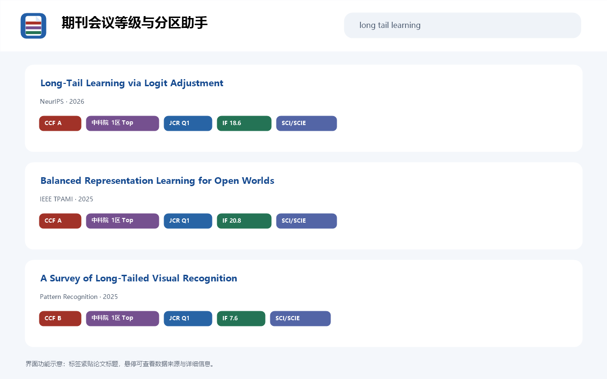

结果页原位显示
支持 Google Scholar、DBLP 及常用官方镜像域名。

标签紧贴论文标题。悬停即可查看指标含义、数据年份、发行商与主要研究方向。
SCI/SCIE 是收录类型，分区由 JCR 或中科院体系单独呈现。
支持 Google Scholar、DBLP 及常用官方镜像域名。
CCF、JCR、中科院分区与 Web of Science 收录类型分别展示。
扩展支持浅色、深色以及跟随系统三种主题。
按批次处理新增结果，避免阻塞 DBLP 与 Scholar 页面。
等级匹配默认在本地完成。插件没有广告、统计分析、跟踪器或开发者账户系统。
它用于识别扩展、权限与更新，不是邮箱，也不需要对应的收件箱。
journal-conference-rank-assistant@polarislight.github.io

查看源码、隐私政策或提交问题。